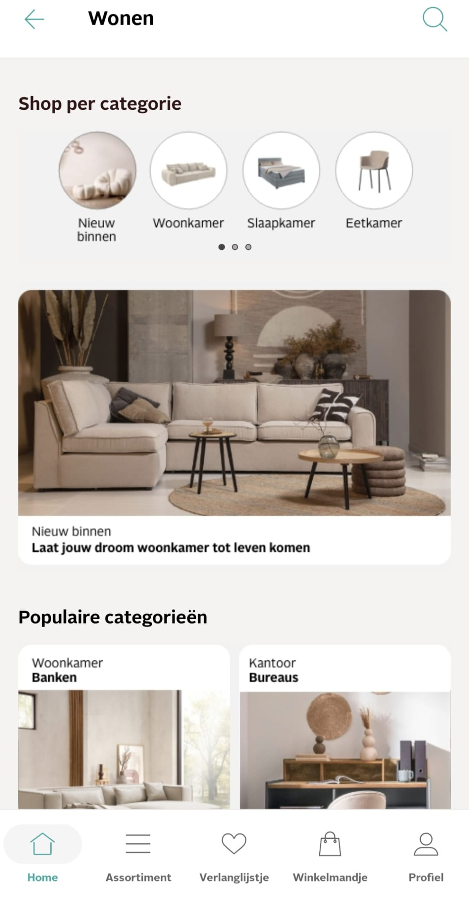
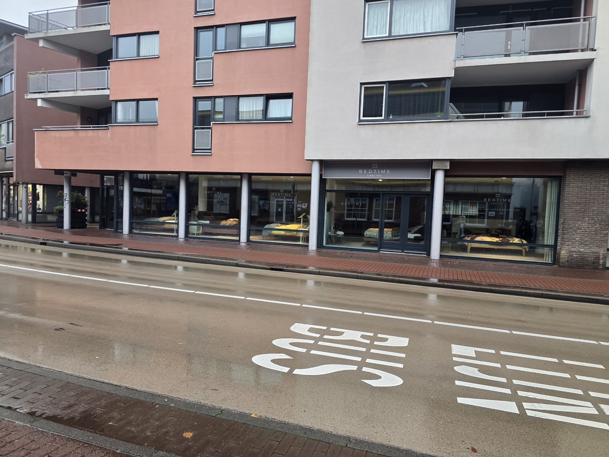

1-Ikea
is a globally recognized Swedish furniture and home goods store, known for its affordable, stylish, and
flat-pack furniture. The stores offer a wide range of products for every room in the house, from kitchens
and bathrooms to living rooms and outdoor spaces.
If you have your own truck, there is free parking there. They also provide paid delivery for customer’s stuffs

2-Otto
is an online retailer that offers a wide variety of products, including furniture, home decor, fashion,
electronics, and more. Founded in Germany, Otto has grown into one of the largest e-commerce platforms,
catering to millions of customers with a broad selection of high-quality goods. Good thing about OTTO is
that enabling its clients to pay in installment. Client can determine how much he can pay monthly. Click here to see OTTO deals:

3-Bedtime
is a furniture store located in Haarlem, Netherlands, specializing in high-quality bedroom furniture,
including beds, mattresses, wardrobes, and related accessories. They focus on offering comfort, design, and
sustainability, with a wide range of modern and classic styles.